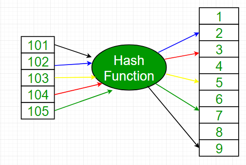
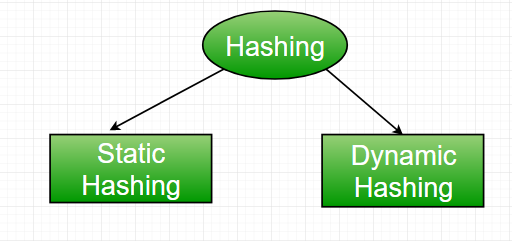
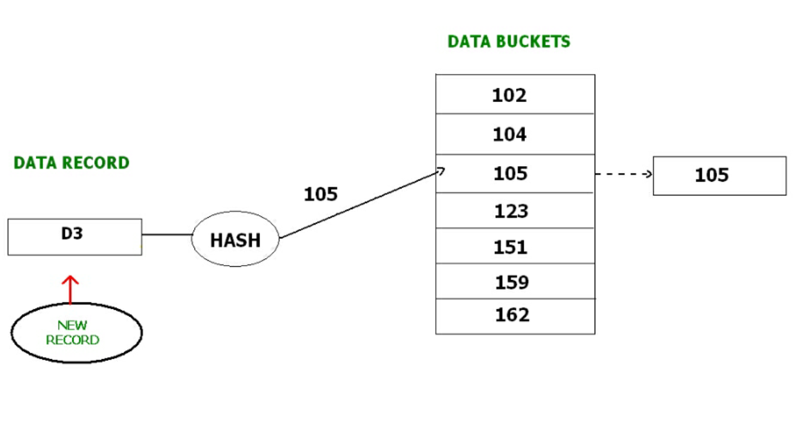
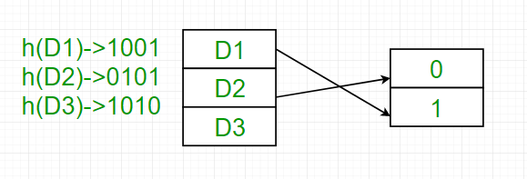
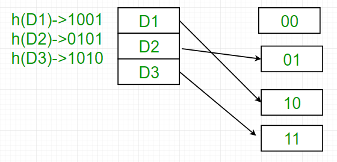

Prerequisite – Hashing Data Structure, File Organization – Set 1
In database management system, When we want to retrieve a particular data, It becomes very inefficient to search all the index values and reach the desired data. In this situation, Hashing technique comes into picture.
Hashing is an efficient technique to directly search the location of desired data on the disk without using index structure. Data is stored at the data blocks whose address is generated by using hash function. The memory location where these records are stored is called as data block or data bucket.
Hash File Organisation :
- Data bucket – Data buckets are the memory locations where the records are stored. These buckets are also considered as Unit Of Storage.
- Hash Function – Hash function is a mapping function that maps all the set of search keys to actual record address. Generally, hash function uses primary key to generate the hash index – address of the data block. Hash function can be simple mathematical function to any complex mathematical function.
- Hash Index-The prefix of an entire hash value is taken as a hash index. Every hash index has a depth value to signify how many bits are used for computing a hash function. These bits can address 2n buckets. When all these bits are consumed ? then the depth value is increased linearly and twice the buckets are allocated.
Below given diagram clearly depicts how hash function work:

Hashing is further divided into two sub categories :

Static Hashing –
In static hashing, when a search-key value is provided, the hash function always computes the same address. For example, if we want to generate address for STUDENT_ID = 76 using mod (5) hash function, it always result in the same bucket address 4. There will not be any changes to the bucket address here. Hence number of data buckets in the memory for this static hashing remains constant throughout.
Operations –
- Insertion – When a new record is inserted into the table, The hash function h generate a bucket address for the new record based on its hash key K.
Bucket address = h(K) - Searching – When a record needs to be searched, The same hash function is used to retrieve the bucket address for the record. For Example, if we want to retrieve whole record for ID 76, and if the hash function is mod (5) on that ID, the bucket address generated would be 4. Then we will directly got to address 4 and retrieve the whole record for ID 104. Here ID acts as a hash key.
- Deletion – If we want to delete a record, Using the hash function we will first fetch the record which is supposed to be deleted. Then we will remove the records for that address in memory.
- Updation – The data record that needs to be updated is first searched using hash function, and then the data record is updated.
Now, If we want to insert some new records into the file But the data bucket address generated by the hash function is not empty or the data already exists in that address. This becomes a critical situation to handle. This situation in the static hashing is called bucket overflow.
How will we insert data in this case?
There are several methods provided to overcome this situation. Some commonly used methods are discussed below:
- Open Hashing –
In Open hashing method, next available data block is used to enter the new record, instead of overwriting older one. This method is also called linear probing.For example, D3 is a new record which needs to be inserted , the hash function generates address as 105. But it is already full. So the system searches next available data bucket, 123 and assigns D3 to it.

- Closed hashing –
In Closed hashing method, a new data bucket is allocated with same address and is linked it after the full data bucket. This method is also known as overflow chaining.
For example, we have to insert a new record D3 into the tables. The static hash function generates the data bucket address as 105. But this bucket is full to store the new data. In this case is a new data bucket is added at the end of 105 data bucket and is linked to it. Then new record D3 is inserted into the new bucket.
- Quadratic probing :
Quadratic probing is very much similar to open hashing or linear probing. Here, The only difference between old and new bucket is linear. Quadratic function is used to determine the new bucket address. - Double Hashing :
Double Hashing is another method similar to linear probing. Here the difference is fixed as in linear probing, but this fixed difference is calculated by using another hash function. That’s why the name is double hashing.
- Quadratic probing :
Dynamic Hashing –
The drawback of static hashing is that that it does not expand or shrink dynamically as the size of the database grows or shrinks. In Dynamic hashing, data buckets grows or shrinks (added or removed dynamically) as the records increases or decreases. Dynamic hashing is also known as extended hashing.
In dynamic hashing, the hash function is made to produce a large number of values. For Example, there are three data records D1, D2 and D3 . The hash function generates three addresses 1001, 0101 and 1010 respectively. This method of storing considers only part of this address – especially only first one bit to store the data. So it tries to load three of them at address 0 and 1.

But the problem is that No bucket address is remaining for D3. The bucket has to grow dynamically to accommodate D3. So it changes the address have 2 bits rather than 1 bit, and then it updates the existing data to have 2 bit address. Then it tries to accommodate D3.

Reference –
cse.iitb.ac.in